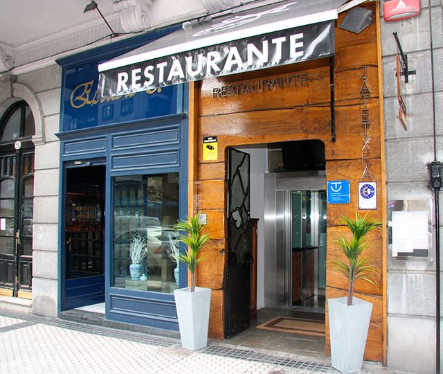

Ikaitz
El Restaurante Ikaitz te sorprende con cenas especiales, donde se mezclan la gastronomía con espectáculos de magia, monólogos, música en directo, ...
Además preparamos clases activas de cocina donde no es necesaría experiencia. Sólo ganas de aprender y divertirse.